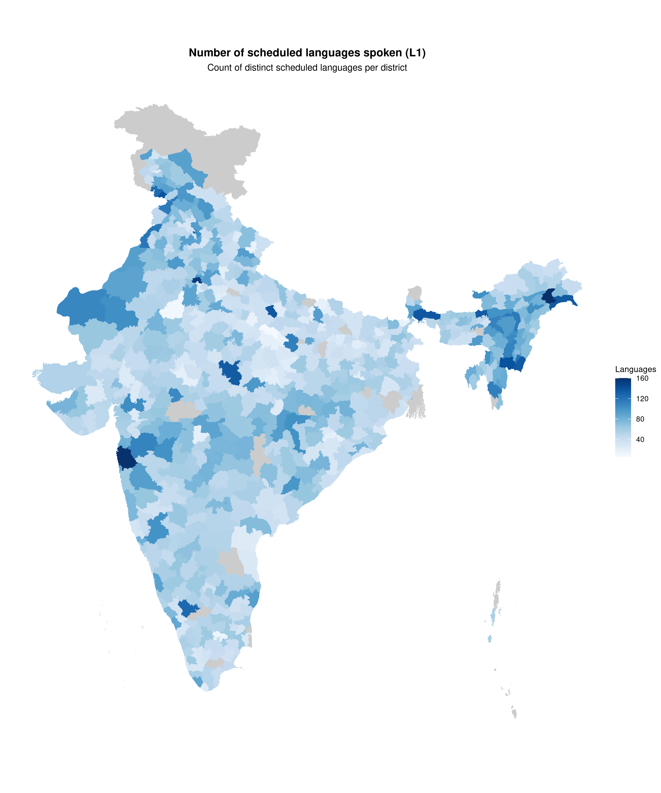
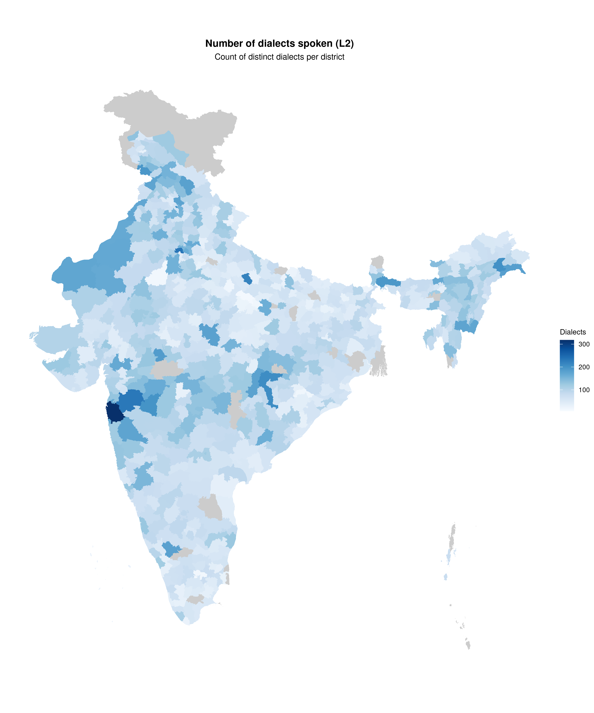

India is one of the most linguistically diverse countries in the world. The 2011 Census recorded over 19,500 languages and dialects. This vignette demonstrates how to visualize this diversity using Shannon entropy.
Load data
data(census_2011_mother_tongue)
census_2011_mother_tongue |>
filter(district_code == "000") |>
group_by(language_level) |>
summarise(n_languages = n_distinct(language_name))
#> # A tibble: 2 × 2
#> language_level n_languages
#> <chr> <int>
#> 1 L1 122
#> 2 L2 355The C-16 tables classify languages as:
- L1: 22 Scheduled Languages recognized in the Constitution
- L2: Dialects and variants within each scheduled language
Calculate Shannon entropy
The effective number of languages () gives an intuitive interpretation: a district with has diversity equivalent to four equally-spoken languages.
calculate_diversity <- function(data, level) {
data |>
filter(language_level == level, district_code != "000", !grepl("Others", language_name)) |>
group_by(state_code, state_name, state_name_harmonized, district_code, area_name) |>
mutate(proportion = total_persons / sum(total_persons)) |>
summarise(
n_languages = n(),
shannon_entropy = -sum(proportion * log2(proportion), na.rm = TRUE),
effective_languages = 2^shannon_entropy,
.groups = "drop"
)
}
diversity_l1 <- calculate_diversity(census_2011_mother_tongue, "L1")
diversity_l2 <- calculate_diversity(census_2011_mother_tongue, "L2")
cat("L1 (Scheduled Languages):\n")
#> L1 (Scheduled Languages):
summary(diversity_l1$effective_languages)
#> Min. 1st Qu. Median Mean 3rd Qu. Max.
#> 1.000 1.123 1.453 1.862 2.105 18.190
cat("\nL2 (Dialects):\n")
#>
#> L2 (Dialects):
summary(diversity_l2$effective_languages)
#> Min. 1st Qu. Median Mean 3rd Qu. Max.
#> 1.000 1.251 1.727 2.242 2.544 22.844Prepare map data
districts_sf <- get_census_boundaries(2011, "district") |>
mutate(district_key = tolower(gsub("[^a-z0-9 ]", "", district_name)))
prepare_diversity <- function(div_data) {
div_data |>
mutate(district_key = tolower(gsub("[^a-z0-9 ]", "", gsub(" District$", "", area_name))))
}
map_l1 <- left_join(
districts_sf,
prepare_diversity(diversity_l1) |> select(state_name_harmonized, district_key, effective_languages, n_languages),
by = c("state_name_harmonized", "district_key")
)
map_l2 <- left_join(
districts_sf,
prepare_diversity(diversity_l2) |> select(state_name_harmonized, district_key, effective_languages, n_languages),
by = c("state_name_harmonized", "district_key")
)L1: Scheduled languages
Diversity index (Shannon entropy)
plot_map(
map_l1,
fill_var = "effective_languages",
title = "Linguistic diversity: Scheduled languages (L1)",
subtitle = "Effective number of languages per district",
legend_title = "Effective\nLanguages",
palette = "reds",
show_state_boundaries = TRUE,
trans = "log2",
limits = c(1, 18),
breaks = c(1, 2, 4, 8, 16)
)
Number of languages spoken
plot_map(
map_l1,
fill_var = "n_languages",
title = "Number of scheduled languages spoken (L1)",
subtitle = "Count of distinct scheduled languages per district",
legend_title = "Languages",
palette = "blues",
show_state_boundaries = TRUE
)
L2: Dialects
Diversity index (Shannon entropy)
plot_map(
map_l2,
fill_var = "effective_languages",
title = "Linguistic diversity: Dialects (L2)",
subtitle = "Effective number of dialects per district",
legend_title = "Effective\nLanguages",
palette = "reds",
show_state_boundaries = TRUE,
trans = "log2",
limits = c(1, 35),
breaks = c(1, 2, 4, 8, 16, 32)
)
Number of dialects spoken
plot_map(
map_l2,
fill_var = "n_languages",
title = "Number of dialects spoken (L2)",
subtitle = "Count of distinct dialects per district",
legend_title = "Dialects",
palette = "blues",
show_state_boundaries = TRUE
)
Most diverse districts
cat("Top 10 by scheduled languages (L1):\n")
#> Top 10 by scheduled languages (L1):
diversity_l1 |>
arrange(desc(effective_languages)) |>
select(state_name_harmonized, area_name, effective_languages) |>
head(10)
#> # A tibble: 10 × 3
#> state_name_harmonized area_name effective_languages
#> <chr> <chr> <dbl>
#> 1 Manipur Churachandpur 18.2
#> 2 Nagaland Chumukedima 16.5
#> 3 Nagaland Dimapur 15.7
#> 4 Nagaland Dimapur Sadar 14.1
#> 5 Nagaland Kohima Sadar 12.6
#> 6 Assam Udalguri 12.0
#> 7 Arunachal Pradesh Jairampur 11.9
#> 8 Manipur Chandel 11.8
#> 9 Arunachal Pradesh Kibithoo 11.3
#> 10 Arunachal Pradesh Changlang 11.2
cat("\nTop 10 by dialects (L2):\n")
#>
#> Top 10 by dialects (L2):
diversity_l2 |>
arrange(desc(effective_languages)) |>
select(state_name_harmonized, area_name, effective_languages) |>
head(10)
#> # A tibble: 10 × 3
#> state_name_harmonized area_name effective_languages
#> <chr> <chr> <dbl>
#> 1 Nagaland Kohima Sadar 22.8
#> 2 Nagaland Zunheboto 22.7
#> 3 Nagaland Chumukedima 22.0
#> 4 Nagaland Dimapur 20.4
#> 5 Nagaland Zunheboto Sadar 19.2
#> 6 Manipur Churachandpur 17.0
#> 7 Dadra & Nagar Haveli Dadra & Nagar Haveli 16.2
#> 8 Nagaland Dimapur Sadar 15.9
#> 9 Arunachal Pradesh Kharsang 15.3
#> 10 Arunachal Pradesh Changlang 14.7